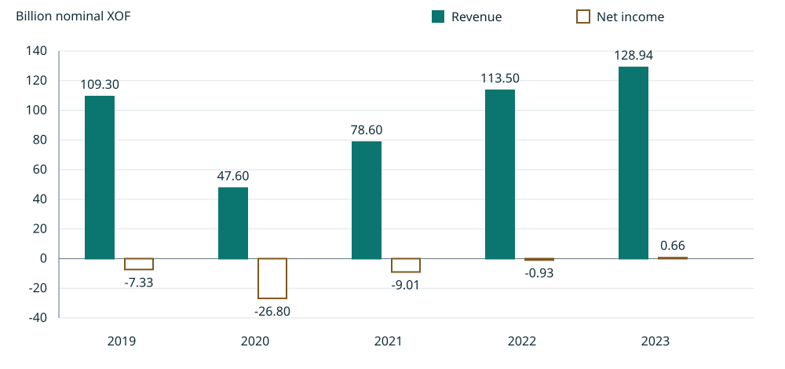

规则层
识别 Yamoussoukro Decision、UEMOA 规则及两国航空法典中的一般准入框架。
法条可核01 · RESEARCH DESIGN
第五航权涉及“本国航司—中间国—目的国”之间的商业承运权。单看航线经过、一般法律开放或媒体报道，都不足以证明某一航司已取得个案许可。
识别 Yamoussoukro Decision、UEMOA 规则及两国航空法典中的一般准入框架。
法条可核查找双边航空协定、指定通知、经营许可和具体航权批准，缺失不以 0 或“默认批准”替代。
逐案核验用监管机构与航司一手材料交叉验证开航陈述，同时与实际逐班记录、当地载运证据区分。
报告证据02 · LEGAL COMPARISON
对照聚焦外国承运人准入、持续监管、资料提交与商业载运边界。点击来源可打开政府公布文本。
03 · EVIDENCE AUDIT
统计对象是研究材料与编码记录，不是“已核实航线数量”。构建脚本只做结构校验，不替代法律效力与网址可用性复核。
页面展示所用核心材料；核验状态描述“我们检查到了什么”，不等于现行法律效力认证。
04 · CASE STUDY
Nairobi–Accra–Dakar 航程中的 Accra–Dakar 是候选外国航段。现有证据支持“航司与监管报告相互印证”，但没有闭合塞内加尔端个案许可与当地商业载运证据。
05 · FINANCIAL EVIDENCE
已完成的金融基础持续服务于全项目。政策利率、银行融资与公司利润来自不同观测层级；不能直接拼成因果链。
21 条 ECB、10 条 BCEAO 事件生成 2020-01—2026-09 的 81 个月月末政策面板。政策水平不是已识别的意外冲击。
查看宏观利率图 →26 季贷款面板（2020Q1—2026Q2）、2020—2025 年度摘要及月度流动性招标。保留 2025Q1 等版本不确定性；银行平均利率不等于航司借款成本。
季度面板 · 年度信贷 · 融资传导仅 1 家航司 × 5 年（2019—2023）。单位：十亿名义 XOF。报告图示舍入值与叙述精确金额分别保留，未核实为单独审计财报。
原始财务 CSV · 变量字典
| 财年 | 营业收入 | 净利润 | 原始精度标签 |
|---|
来源：Côte d'Ivoire DGPE《Rapport Annuel sur la Gestion du Portefeuille de l’État 2023–2024》，印刷第 151 页，继承仓库财务 CSV 的转录及逐行来源。官方报告 ↗
06 · RESEARCH PROGRESSION
已完成的是金融资料整理与法律证据基础，交叉机制仍待证据检验。
官方政策事件、月度／季度／年度融资数据、版本审计与五年公司财务记录均可追溯；旧租赁模型仅是历史情景演示。
数据与可复算成果法律矩阵、来源登记、航线审计、KQ 候选证据链及离线展示已建立。结构校验不代替法语原文、现行效力与行政实践复核。
证据基础已建立准入条件可能影响航线选择与合规成本；融资条件可能约束机队与经营。需取得许可、公司融资与同口径财务数据后再研究二者的共同作用。
未验证 · 非因果结论DEFENCE READY
断网时直接打开 v3/offline.html；联网时官方来源按钮可跳转原文。